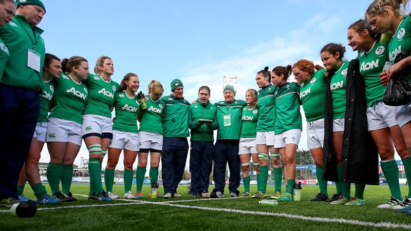

Nine uncapped players in Women's Six Nations squad
22 Dec 2017
Ireland Women’s head coach Adam Griggs has named nine uncapped players in a squad of 38 for the 2018 Six Nations.
The squad, compromising of 10 different clubs, also sees nine players from the Sevens programme. With the Sydney 7s taking place on the 27th and 28th of January, players who are selected for this tournament will not be available for the first game in France. In the backs, Michelle Claffey, Katie Heffernan, Eve Higgins, Deirbhile Nic A Bhaird, Susan Vaughan and Megan Williams, as well as the forward trio of Laura Feely, Aoife McDermott, Edel McMahon are all in contention of a first Test cap. Grigg will announce the team captain in the New Year. Ireland play France in their opening game of the Championship on Saturday, 3rd February at the Stade Ernst-Wallon in Toulouse, with a 9pm kick-off.
They will then have three home games in Donnybrook Stadium with Italy on the 11 February, Wales on 29 February and Scotland on 11 March. Ireland will finish their Championship at away to England on 16 March in what will be a double header in the Ricoh Arena in Coventry, with the Ireland U20s meeting their English counterparts after the women's game. Ireland will also travel to face Wales in an uncapped warm-up fixture in January.
"I'm excited to be working with these players and I'm looking forward to getting the campaign underway in what is set to be a tough opening game in the south of France," Grigg said. "Over the course of the interprovincial fixtures I've had the opportunity to see the players in competitive and challenging games, and it was very valuable for me to see them in action. "There is good experience in the squad, with most of the players selected competing at this level for a number of seasons."
Ireland Women's Six Nations Squad 2018
Forwards:
- Elaine Anthony (Highfield / Munster)
- Ashleigh Baxter (Cooke / Ulster
- Anna Caplice (UL Bohemian / Munster)
- Ciara Cooney (Railway Union / Leinster)
- Laura Feely (Galwegians / Connacht)*
- Paula Fitzpatrick (St. Mary's College / Leinster)
- Orla Fitzsimons (St. Mary's College / Leinster)
- Nichola Fryday (Tullamore / Connacht)
- Ciara Griffin (UL Bohemian / Munster)
- Leah Lyons (Highfield / Munster)
- Aoife McDermott (Railway Union / Leinster)*
- Edel McMahon ((Galwegians / Connacht)*
- Claire Molloy (Bristol)
- Cliodhna Moloney (Railway Union / Leinster)
- Ciara O'Connor (Galwegians / Connacht)
- Chloe Pearse (UL Bohemian / Munster)
- Lindsay Peat (Railway Union / Leinster)
- Fiona Reidy (UL Bohemian / Munster)
Backs:
- Niamh Briggs (UL Bohemians / Munster)
- Nikki Caughey (Railway Union / Ulster)
- Michelle Claffey (Blackrock College / Leinster)*
- Mairead Coyne (Galwegians / Connacht)
- Nicole Cronin (UL Bohemian / Munster)
- Jeamie Deacon (Blackrock College / Leinster)
- Katie Fitzhenry (Blackrock College / Leinster)
- Kim Flood (Railway Union / Leinster)
- Louise Galvin (UL Bohemian / Munster)
- Mary Healy (Galwegians / Connacht)
- Katie Heffernan (Railway Union / Leinster)*
- Eve Higgins (Railway Union / Leinster)*
- Ailsa Hughes (Railway Union / Leinster)
- Claire McLaughlin (Cooke / Ulster)
- Alison Miller (Old Belvedere / Connacht)
- Sene Naoupu (Old Belvedere / Leinster)
- Deirbhile Nic A Bhaird (UL Bohemian / Munster)*
- Hannah Tyrrell (Old Belvedere / Leinster)
- Susan Vaughan (Railway Union / Leinster)*
- Megan Williams (Old Belvedere / Leinster)*